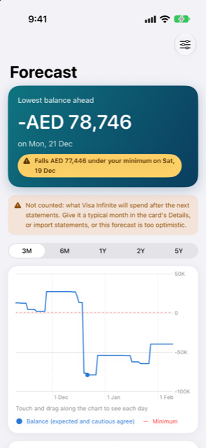

Guide › Planning
Forecast and safe to spend
How Damla works out the amount that is safe to spend, and how to read the chart.
The Forecast shows your balance for the days ahead, day by day, from what is already in your books. Safe to spend is the most you can spend today without your balance falling below your minimum at any point in the coming period.

When to use it
- To see how low your balance gets, and when, over the range you pick: 3M, 6M, 1Y, 2Y or 5Y.
- When Today says You may run short, to find the day it happens.
- After you change an income, a bill or a due date, to see what the weeks look like now.
Step by step
- Open the Forecast from the chart on the teal card at the top of Today.
- Pick a range with the picker at the top; the chart draws your balance for it, with your minimum as a dashed red line.
- Touch and drag along the chart to move the dot. A small box shows the day's date, balance and movements, and the card below lists them as Money in and Money out with totals.
- Read the banner at the top: if and when the balance would fall under your minimum, or that it stays above your minimum.
- Tap What if at the top right to try a change: spend, receive, skip a recurring payment or plan, or add an instalment plan. You see the effect on safe to spend and the lowest point. Nothing is saved to your books.
How the number is worked out
- Income and bills from Plan, Income & bills are counted on their schedules; ones you recorded or skipped are not counted again.
- Card bills: an issued statement uses its real amount on its due date. A statement not issued yet uses a typical month of the card's spending - an average of its recent months, the number set in Settings under Expected card spending, or the figure you give in the card's Details. An issued statement's real amount takes over. Each card's figure is listed in the Cards group under What this forecast is made of.
- Instalment plans, staged payments, bills announced by notices and repayments with people are counted on their dates.
- Everyday spending from your bank accounts is not estimated; your buffer covers it.
- Safe to spend looks at least as far ahead as the Look ahead setting, counting your next income inside that period too, so a big payment just after payday lowers the number. It is the lowest balance in that period minus the minimum.
A worked example
An invented household, on 9 November. Currency AED, minimum balance AED 1,000, look ahead at least 30 days.
| What counts | Value |
|---|---|
| Everyday account (bank) | AED 29,600 today |
| Savings | AED 40,000, marked not in forecast |
| Internet, monthly on the 12th | AED 350 out |
| Rent, monthly on the 16th | AED 8,000 out |
| Salary, monthly on the 27th | AED 25,000 in |
Today shows: balance today AED 29,600, lowest point AED 21,250 on Mon 16 Nov, safe to spend AED 20,250 - the lowest point minus the AED 1,000 minimum. The window runs from 9 Nov to 9 Dec, past the salary on Fri 27 Nov, so what lands after payday is counted too. The savings are not in these figures.
Balance day by day (expected line; cautious is the same here, as every item is fixed):
| Date | Balance | Why |
|---|---|---|
| 9 to 11 Nov | AED 29,600 | |
| 12 Nov | AED 29,250 | Internet 350 |
| 16 Nov | AED 21,250 | Rent 8,000 (the lowest point) |
| 27 Nov | AED 46,250 | Salary 25,000 |
One-off payment limits (one payment, keeping the minimum):
| Payment date | Most you could pay | Comfortable amount |
|---|---|---|
| 10 Nov, 13 Nov or 19 Nov | AED 20,000 | AED 16,000 |
| 29 Nov (after salary) | AED 36,500 | AED 29,500 |
Before the salary, a payment up to the first row's amounts never takes the balance under the AED 1,000 minimum. After payday, the limit is larger.
Good to know
Related
Something unclear or missing? Write to support@raveniq.ai and say which page.